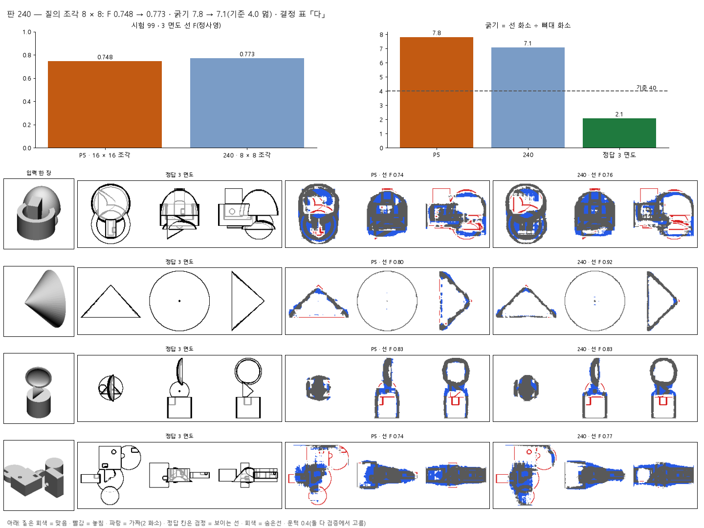

m1_tr0240_h001_질의잘게
질의 디코더의 조각을 16 × 16 화소에서 8 × 8 화소로 잘게(질의 192 → 768) 하면, 한 장 → 3 면도가 덩어리 대신 선으로 나오나(굵기 ↓) — 3 면도 선 F 를 잃지 않고?
판정 · 다 — 240 시험 3 면도 선 F 0.773(P5 0.748 대비 +0.026) · 굵기 7.07(P5 7.81 · 정답 2.07 · 기준 4.0 멂) · 확인 통과(P5 0.7475) · 조각을 잘게 해도 덩어리 → 결정 표대로면 선 지도 먼저 그리는 꼴 · 단 조사(11-19)에서 양성 무게 · 문턱이 첫 원인으로 나와 학습 없는 0 번 확인을 먼저 제안
| 가설 | 주장 | 결과 | 근거 |
|---|---|---|---|
| H1 | 덩어리는 질의 하나가 16 × 16 조각을 통째로 내서 선 자리를 조각 단위로만 짚기 때문이다 | 기각 | 굵기 7.81 → 7.07(−9 % · 기준 4.0 멂) · F 0.748 → 0.773 |
분석
한 줄로
물음: 질의 디코더의 조각을 16 × 16 화소에서 8 × 8 화소로 잘게(질의 192 → 768) 하면, 한 장 → 3 면도가 덩어리 대신 선으로 나오나 — 3 면도 선 F 를 잃지 않고?
답: 아니다(결정 표 「다」). F 는 0.748 → 0.773 으로 올라 한 장 길 최고가 됐지만, 굵기는 7.8 → 7.1 로 조금 줄었을 뿐이다(기준 4.0 · 정답 2.1). 조각을 잘게 해도 덩어리다.
왜 이 판을 했나
tr239 에서 양성 무게를 낮추니 덩어리 대신 선을 놓쳤다. 사용자는 「굵게 나오고 세밀하게 못 만든다」고 짚었다. 질의 하나가 16 × 16 조각을 통째로 내서 선을 조각 단위로만 짚는다고 짐작했다.
바꾼 것 하나
tr239 P5 무게에서 질의를 2 × 2 로 쪼개 768 개로 늘리고, 출력 층만 2 × 8 × 8 로 새로 배웠다(8,000 스텝). 나머지는 같다.
결과

| 시험 99 · 정사영 | P5 | 240 | 정답 |
|---|---|---|---|
| 3 면도 선 F | 0.748 | 0.773 | |
| 굵기 | 7.8 | 7.1 | 2.1 |
| 보이는 선 F · 숨은선 F | 0.692 · 0.432 | 0.728 · 0.449 | |
| 방향 맞음 | 0.94 | 0.96 | |
| 원근 · 축 시점 F | 0.743 · 0.695 | 0.773 · 0.718 |
- P5 를 다시 돌려 0.7475 가 그대로 나왔다(확인 통과).
왜 이렇게 나왔나
확인한 것
- 조각을 잘게 하자 F 는 올랐지만 굵기는 그대로다. 학습 중 그림은 덩어리가 자잘한 점으로 부서진 꼴이었다(가짜 = 파랑).
- 같은 날 조사(claudedocs/research_가는선3면도_20261119.md)에서, 양성 무게 5 로 배운 BCE 는 「선일 확률 1/6 이상」을 모두 0.5 위로 내는 것이 수식으로 나온다. 우리는 문턱을 0.6 까지만 골랐다.
짐작 (아직 확인 안 함)
- 굵은 선의 첫 원인은 조각 크기가 아니라 손실 설정과 문턱이다. 조각 크기는 점처럼 흩어지는 꼴만 바꾼다.
한계
- 씨앗 하나 · 8,000 스텝 상한 · 결정 표 다음(「선 지도를 먼저 그리는 꼴」)은 조사 전에 쓴 것.
배운 것과 다음
조각을 잘게 하면 F 는 오르지만 굵기는 안 준다. 굵기는 손실 · 문턱 쪽에서 풀어야 한다.
- 조사 0 번: 학습 없이 tr239 · 240 출력에 문턱 0.6 ~ 0.9 · NMS · thinning 을 걸고 1:1 매칭 F 와 굵기로 다시 잰다(사용자 확인 대기).
- 그다음 결정 표대로 선 지도를 먼저 그리는 꼴, 또는 조사 1 · 2 번(거리장 · MatchED).
- 지금 한 장 바탕: tr240 — 0.773(굵기 7.1).
판 기록
- 카드 · 코드 58155e9 · GPU 1 · 학습 8,000 스텝 70 분 · 시험 GPU 1